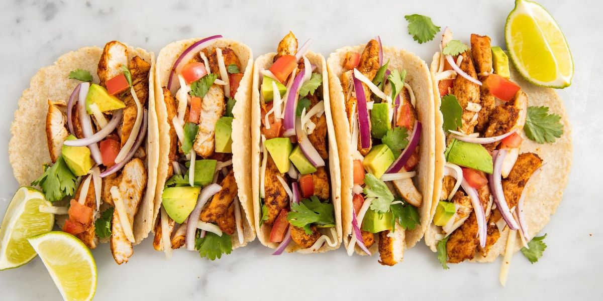

Taco

Description
Tacos are a mexican dish. It is very popular all over the world, as it is good tasting
and is very easy to make. You can eat it with almost any vegatables and sauces and make it your own.
Ingredients
- Taco shells
- Minced meat
- Shredded cheese
- Corn
Steps
- Start with cooking your minced meat until it is brown.
- Put the shells in the oven for heating.
- When they are both done, put the meat and cheese in your shells and add desired veggies.